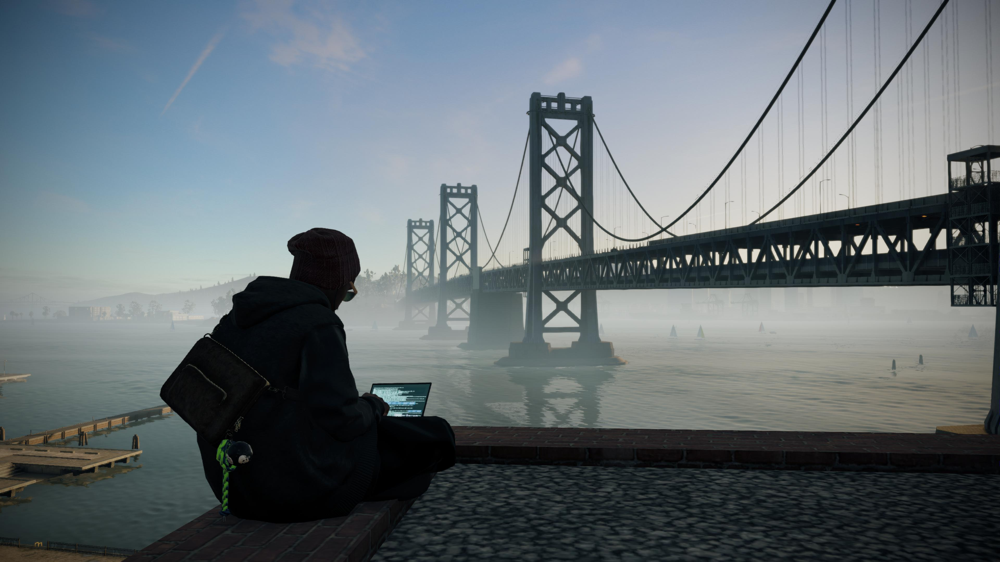
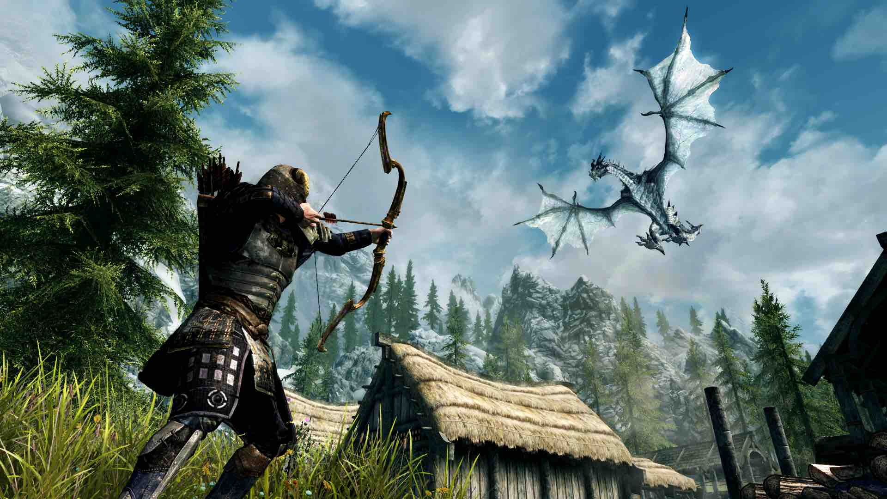

Video game adalah permainan elektronik interaktif yang dimainkan melalui perangkat keras seperti komputer, konsol, ponsel dengan antarmuka audio dan visual. Hal ini melibatkan interaksi aktif antara pengguna dan sistem untuk mencapai tujuan tertentu berdasarkan aturan, narasi, atau simulasi yang disajikan. Selama hidup saya selama 20 tahun, berikut videogame menurut saya yang terbaik sepanjang masa:
Red Dead Redemption 2

Red Dead Redemption 2 adalah game aksi-petualangan open-world yang dibuat oleh Rockstar Games yang dirilis pada 2018. Berlatar tahun 1899 di era akhir Wild West Amerika, game ini berkisah tentang Arthur Morgan, anggota geng Van der Linde yang berjuang bertahan hidup dari kejaran hukum dan perubahan zaman.
Game ini masuk ke salah satu game teratas saya karena style gameplaynya yang fleksibel. Ditambah dengan elemen open world yang membuat pemain bisa menjelajah dunia yang luas dan interaktif. Kerealistisan grafis dan story dari game ini juga menambah pengalaman pemain untuk memainkan game ini.
Watch Dogs 2
Watch Dogs 2 adalah game aksi-petualangan open-world tahun 2016 yang digarap oleh Ubisoft yang berlatar di San Francisco. Pemain berperan sebagai peretas, Marcus Holloway, yang bergabung dengan kelompok DedSec untuk melawan sistem pengawasan kota, Central Operating System (ctOS) 2.0. Game ini fokus pada peretasan, eksplorasi, dan kreativitas.
Game ini masuk ke salah satu game teratas saya karena bagaimana world building dan misi yang diberikan sangat menarik perhatian dari player. Elemen hacking yang dimasukkan dalam game ini menambah kesan keseruan dan pengalaman bermain. Dunia open world dan grafis yang ditawarkan sangat bagus meskipun game ini dirilis 10 tahun yang lalu.
God of War (2018)

God of War (2018) adalah game aksi-petualangan pemenang Game of the Year yang dikembangkan oleh Santa Monica Studio. Game ini merupakan reboot atau kelanjutan yang mengubah total gaya permainan, berfokus pada narasi emosional, pertempuran berbasis strategi, dan eksplorasi mitologi Nordik, di mana Kratos berusaha mendidik putranya, Atreus.
Alasan game ini masuk ke daftar game teratas saya adalah karena game ini memberikan mekanik dan musuh yang beragam, sehingga pemain tidak mudah bosan memainkannya. Mekanik yang dimaksud adalah bagaimana item dan skill yang kita pakai dapat menentukan peluang kita dalam memenangkan suatu per.tempuran. Grafis yang bagus juga menambah pengalaman seru dalam bermain game ini
Cyberpunk 2077

Cyberpunk 2077 adalah game open-world action-adventure RPG yang dikembangkan oleh CD Projekt Red, berlatar di kota distopia futuristik bernama Night City. Pemain berperan sebagai V, tentara bayaran yang memodifikasi tubuh dengan teknologi, berjuang bertahan hidup di tengah kota yang terobsesi dengan kekuasaan dan kekayaan.
Game ini masuk ke daftar game terbaik saya adalah karena elemen fps (first person shooter) ditambah dengan RPG melawan lawan yang beragam membuat pemain semakin senang untuk mencari strategi yang bagus. Ditambah dengan grafis yang ciamik menjadikan game ini sangat memanjakan mata dan tangan pemain saaat memainkannya.
Elder Scrolls V : Skyrim
The Elder Scrolls V: Skyrim adalah game action role-playing (RPG) open-world legendaris yang dikembangkan oleh Bethesda, dirilis pada 2011. Pemain berperan sebagai Dragonborn yang bertugas mengalahkan naga Alduin di dunia fantasi yang luas, menawarkan kebebasan tinggi untuk menjelajah, meningkatkan skill, dan menyelesaikan misi.
Alasan mengapa game ini masuk ke salah satu daftar game terbaik menurut saya adalah bagiamana game ini menyajikan fleksibilitas dalam memainkan dan mengatur playstyle pemain sendiri. Ditambah dengan dunia yang imersif dan interaktif membuat seakan player berada langsung di dunia tersebut.